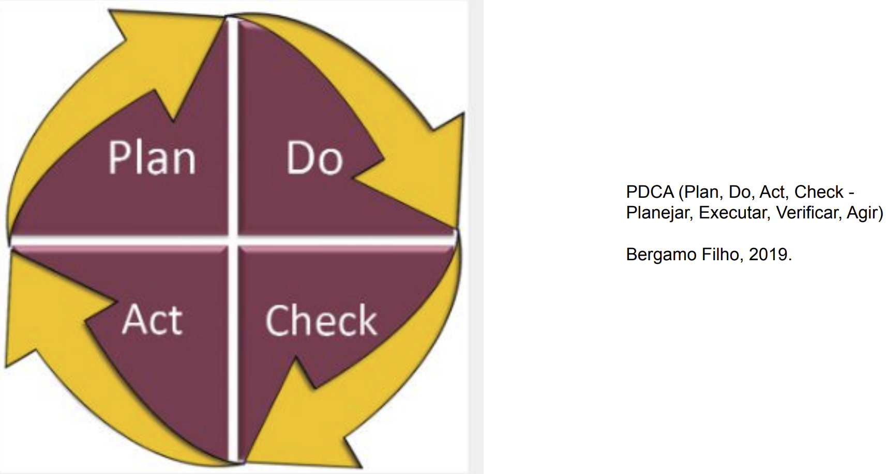
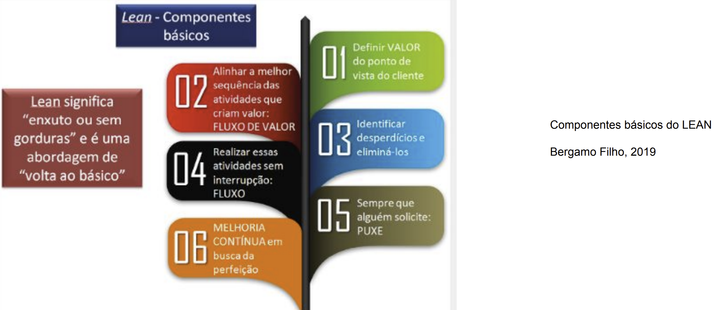

Disciplinas
GESTÃO DE INOVAÇÃO E DESENVOLVIMENTO DE PRODUTOS Concluído
Materiais
Vídeo 1 - [UFMS Digital] Gestão de Inovação e Desenvolvimento de Produtos - Módulo 1 - Apresentação sendProf° ministrante: Dr. Arthur Caldeira Sanches
Projetos, ferramentas e análises de negócios
“[...] o que conta não é ser o primeiro a pensar e ter uma ideia revolucionária, mas, sim, o primeiro a identificar uma necessidade de mercado e saber atendê-la, antes que outros o façam” (Dornelas, 2021).
Projetos, ferramentas e análises de negóciosUm dos principais aspectos a serem analisados, frente a uma nova ideia, é o seu timing.
- Principalmente no que se refere à tecnologia, por conta da velocidade de mudanças.
Oportunidades - aspectos essenciais
- A qual mercado ela atende?
- Qual o retorno econômico que ela proporcionará?
- Quais são as vantagens competitivas que ela trará ao negócio?
- Qual é a equipe que transformará essa oportunidade em negócio?
- Até que ponto o empreendedor está comprometido com o negócio?
Projetos, ferramentas e análises de negócios
- Critérios para a avaliação de oportunidades:
- Mercado
- Análise econômica
- Vantagens competitivas
- Equipe gerencial
- Critérios para a avaliação do potencial da oportunidade:
- Demanda de mercado
- Tamanho e estrutura do mercado
- Análise de margem


- Compliance:
- Termo que designa atendimento e cumprimento às normas e regras legais e regulamentares.
- A empresa que visa uma consolidação no mercado, a longo prazo, deve alinhar o compliance aos objetivos estratégicos, missão e visão.
- Principais fontes de financiamento, no Brasil:
- Economia pessoal, família e amigos
- Investidor-anjo
- Fornecedores, parceiros estratégicos, clientes e funcionários
- Capital de risco